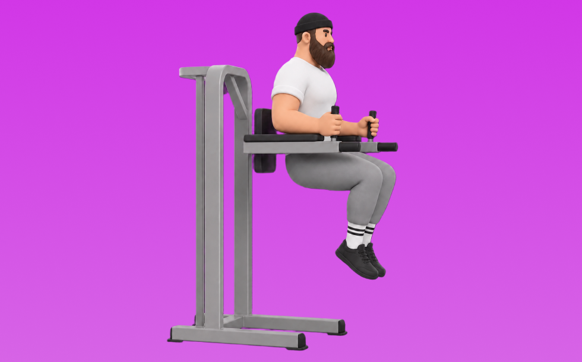

ハンギングレッグレイズ

ハンギングレッグレイズとは、自重を使って「脚を持ち上げる」動作で腹筋群（腹直筋、腹横筋）を鍛える種目です。器具なしで手軽にでき、フォーム次第で負荷調整しやすいのが特徴で、反動を抑えてコントロールしながら反復します。お腹の引き締めと体幹固定力の向上が期待できます。
- 対象部位
- 体幹
- 器具
- 自重
- 記録形式
- 回数
- 別名
- HLR
YouTube動画
-
【筋トレ】ハンギングレッグレイズの正しいやり方 | パーソナルトレーナーが解説【ビーレジェンド プロテイン】
-
【筋トレの質が上がる】徹底解説!!ハンギングレッグレイズ！
-
ハンギングレッグレイズ【やり方と練習方法】腹筋を割る【 ワークアウト WORKOUT | Hanging Leg Raises 】
-
ハンギングレッグレイズのフォーム・やり方◎『腹直筋』と『下腹部』に強烈な刺激を！
-
腹筋に効きまくる！ハンギングレッグレイズ系のやり方と意識するポイント！[カリステニクス･自重トレ]
-
【フォームが良くないから腰が痛くなるのです】めちゃくちゃ効く！レッグレイズ極意解説
-
【ハンギングレッグレイズ】揺れずに腹筋下部・腹直筋に効くやり方のコツを解説
-
【日本一女子】ハンギングレッグレイズの2つのポイント解説 【新・バズーカ岡田チャンネル】 #バズーカ岡田
-
【腹筋】ハンギングレッグレイズの難易度別のやり方 〜中・上級者向け〜
-
腹筋のトレーニング【ハンギングレッグレイズ】で体がゆれないやり方を解説
-
ハンギングレッグレイズのやり方解説 腹筋を鍛える！ - 筋トレ講座
-
【下っ腹撃退】レッグレイズの正しいやり方
-
【筋トレ】腹筋だけを効果的に鍛えるレッグレイズのポイント
-
【神種目】たった1種目でバキバキ腹筋。腹筋を割る極意を徹底解説！
-
【トレーニングギアを使って腹筋トレ！～ハンギングレッグレイズ～】#111
-
レッグレイズの効果的なやり方｜お腹を引き締めて腰に負担をかけにくい3つのポイント
-
【自宅で腹筋強化】ハンギングレッグレイズでバキバキにしよう！
-
[初心者向け腹筋]ハンギングニーレッグレイズを現役トレーナーが1分で解説
-
【筋トレ初心者必見】ハンギングレッグレイズのコツ ～腰痛持ちの方にオススメ腹筋～
-
【初心者必見】ハンギングレッグレイズが2分で分かるたった1つのコツ
-
【初心者】レッグレイズの効果的なやり方 | 腹直筋を鍛える腹筋種目【ビーレジェンド プロテイン】
-
「レッグレイズ」の正しいやり方。腹直筋を鍛える腹筋トレーニング【リングフィット攻略】
-
プロが教えるダイエット筋トレ「ハンギングレッグレイズ」編
-
[ハンギングレッグレイズ]揺れる人に見てほしい
-
効かせるトレーニング講座 No30 ハンギングレッグレイズでも意識がすべて
-
【腹筋】足の上げ下げだけで鍛える！「レッグレイズ」の基本的なやり方
-
プリズナートレーニング レッグレイズ6 ハンギングニーレイズのやり方
-
『ハンギングレッグレイズ改②？細かい所が意外と重要！？』CHICKEN HEART TV vol.119実技篇
-
ハンギングレッグレイズやってみた！
YouTubeショート
-
【腹筋トレ解説】ハンギング・レッグレイズ #筋トレ解説 #腹筋トレ #腹筋トレーニング
-
細マッチョ流ハンギングレッグレイズ
-
ハンギングレッグレイズ段階別 #workoutmotivation #abs #腹筋
-
ハンギングレッグレイズ(Hanging Leg Raise)のやり方！基本フォームを覚えよう
-
【ハンギングレッグレイズ 】運動不足解消！お腹引き締めエクササイズ
-
腹筋を最大限に鍛える種目３選【筋トレ】
-
バキバキの腹斜筋を作るハンギングレッグレイズのやり方#Shorts
-
世界最速で腹筋を割る/ハンギングレッグレイズ #shorts
-
【腹筋を割る】"ハンギングレッグレイズ"解説 #パーソナルトレーニング #マッチョ#腹筋#筋トレ#ダイエット
-
【筋トレ上級者必見 ! |上級者レッグレイズのやり方】日本人初ミスター・オリンピアに出場した、山岸プロが解説！ #山岸秀匡 #筋トレ上級者 #レッグレイズ 横verはコメ欄から
-
ハンギングレッグレイズ
-
腹筋を鍛えるトレーニング ハンギングレッグレイズの効果的なやり方
-
安全にレッグレイズを行う方法
-
腹筋はシンプルですが#shorts
-
肩甲骨を安定させるためにハンギングレッグレイズする #筋トレ #パフォーマンスアップ #姿勢 #肩甲骨 #ウォーミングアップ #スクワット #ベンチプレス
-
#ハンギングレッグレイズ#ツイスト http://www.illbe
-
ハンギングレッグレイズ｜How To Training
-
夏までに腹筋を割りたくてハンギングレッグレイズをする動画 #筋トレ #ダイエット#社会人 #shorts
動作方法
- 体幹を固定して姿勢を整える
- 反動を使わず、腹部の収縮を感じる
- 呼吸を止めずに動作する
動作ポイント
- 腰を反らしすぎない
- 首に力を入れすぎない
ワンポイントアドバイス
- 回数よりも体幹の安定を優先する
- 腰に違和感がある場合は可動域を調整する
目的別回数設定
目的や体力に応じた一般的な目安です。無理のない範囲で調整してください。
- 筋力アップ
- 1〜5回
- 筋肥大
- 6〜12回
- 持久力アップ
- 13〜20回
YouTube動画について
動画はYouTubeの公開情報をもとに表示しています。内容は投稿者によるもので、Biggrによる監修ではありません。
アプリを入手
筋トレやトレーニングの記録はBiggrにお任せください。今すぐ無料で使い始められます。